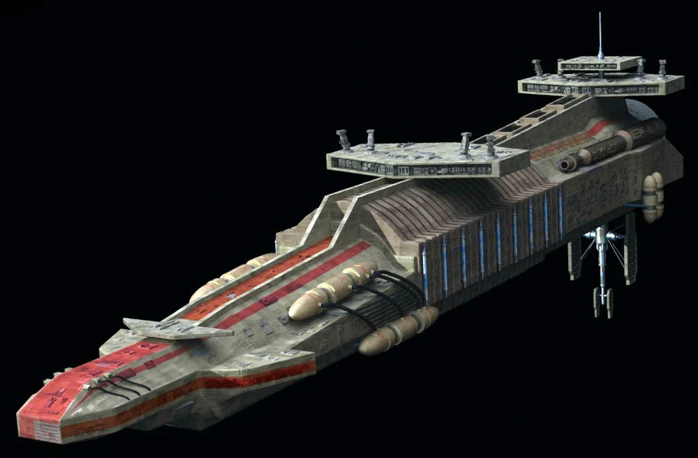

|
 Kamauri csatahajó40 000 000
|
Kamauri csatahajó történeteA hadihajó egy tömeghajtóművel volt felfegyverezve, amely aszteroidákat használt lőszerként a bolygók bombázásához. A Kumauri csatahajót BBY 10,000 körül fejlesztette ki a Kumauri Birodalom, az akkori Külső Peremterületek területén. A konstrukciót eredetileg a Kumauri űr határrendszereiben fejlesztették ki, és a birodalom uralkodójáról, Vall Kumauriról nevezték el. Felszerelése
|